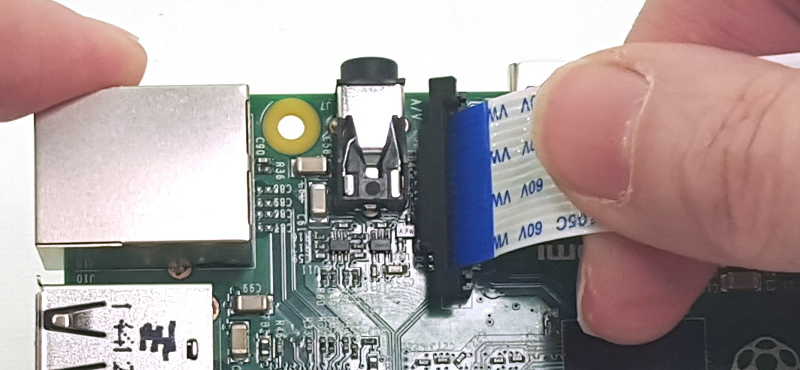

GIP werking
Hoe krijg je mijn GIP aan de Praat ?
Wat is mijn GIP
Mijn GIP is een Buiten school registratie.
Wat houdt dit precies in ?
Mijn gip zet op basis van een gegenereerde QR-Code de leerlingen aanwezig/afwezig om ze op een efficiente wijze te controleren.
Disclaimer
Mijn Gip werkt alleen nog maar op een handmatige basis door het volgende commando te typen via de raspberri py config panel
"sudo python reader.py 0" .
Wanneer je deze code hebt ingetikt en enter hebt geduwd, gaat de Raspberry pi direct via de camera opzoek naar een QR-Code.
Deze QR-Code bestaat uit het email adres van de leerling, de datum en tijd wanneer deze gemaakt werd.
Dan wordt de QR-Code opgesplits in deeltjes die zo naar de databank gestuurd worden om bij de juiste persoon de gegevens aan te passen.
Hoe bouw je de basis op van mijn programma ?
wat heb je nodig
Een Raspberry pi, Muis en toetsenbord, InternetVerbinding, Een Raspberry pi camera module, Computerscherm + kabels.
stap 1 : Installeer Raspbarian op de raspberri pi via een SD kaart.
stap 2 : Plug de Camera in de juiste module slot

stap 3 : Zorg ervoor dat de Camera enabled is dit kan je doen via het commando "sudo raspi-config" in de terminal hebt ingetickt, daarna ga je naar nummer 5 of "Interfacing Options" genaamd,Vervolgens ga je naar P1 of "Camera" en enable je de camera hierna zul je de raspberry pi moeten heropstarten.
stap 4 : Als de Raspberry pi terug opgestart is dan zult u 1 voor 1 deze commando's moeten plakken in de terminal.
sudo apt-get update
sudo apt-get update -y && sudo apt-get upgrade -y
sudo apt-get install fswebcam
sudo easy_install pip
sudo apt-get install build-essential python2.7-dev python-setuptools
sudo sush install_opencv.sh
sudo pip install picamera
sudo apt-get install python-qrtools
sudo apt-get install libzbar-dev
sudo pip install zbar
stap 5 : plaats alle bestanden in de bestandbeheerder applicatie, maak een mapje aan die qr_codes noemt hier worden alle Qr-Codes in opgeslagen.